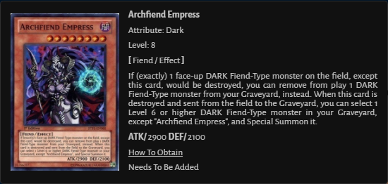
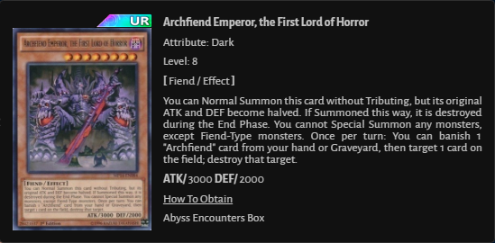
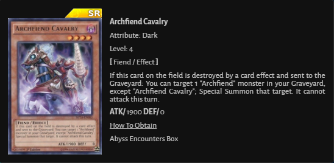
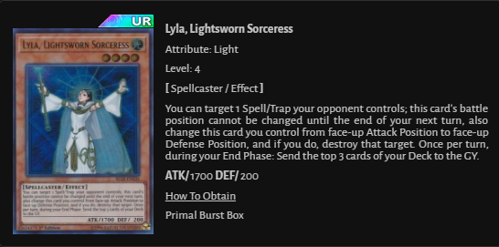
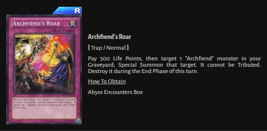
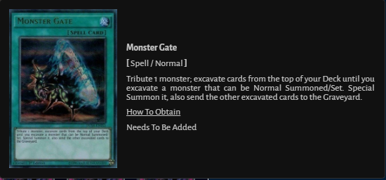
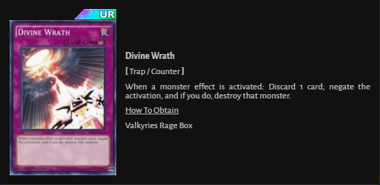
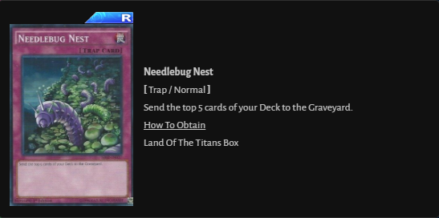
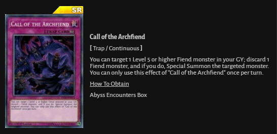
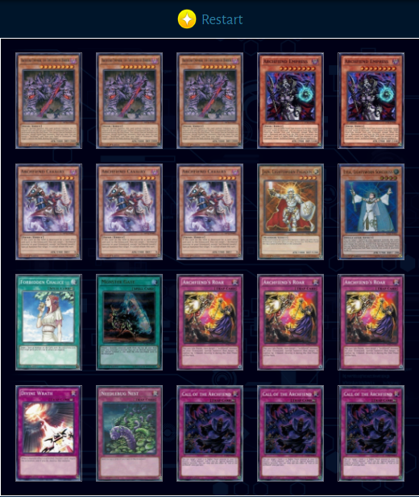

How To Get Carts










Archfiends focus around using large boss monsters that can be special summoned via the grave. These bosses focus on overpowering your opponent while simultaneously depleting their resources. As the archetype currently functions, it plays almost exclusively from the grave and not as much from the hand itself. Archfiends can build some of the most imposing fields in the current game if they open well and mill properly.
It should be noted that each of the 3 current main builds all focus on different plays, set-ups, and seek out different cards throughout the duel. Which build you go after is entirely dependent on your preferred playstyle and the type of deck that you value the most.
